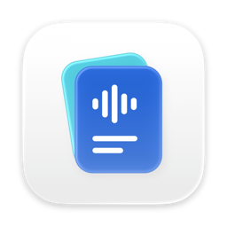
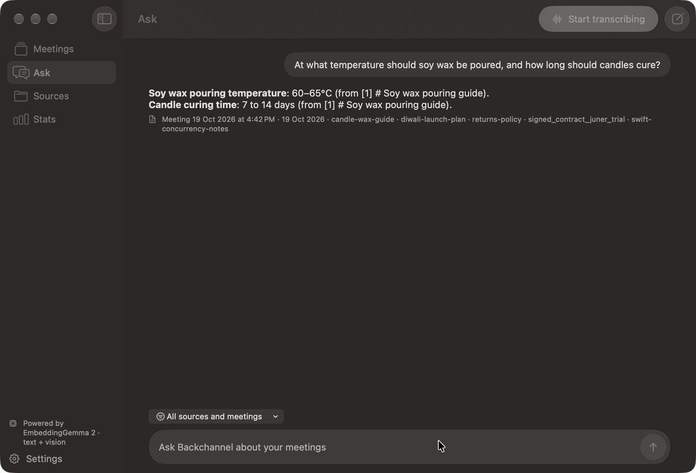
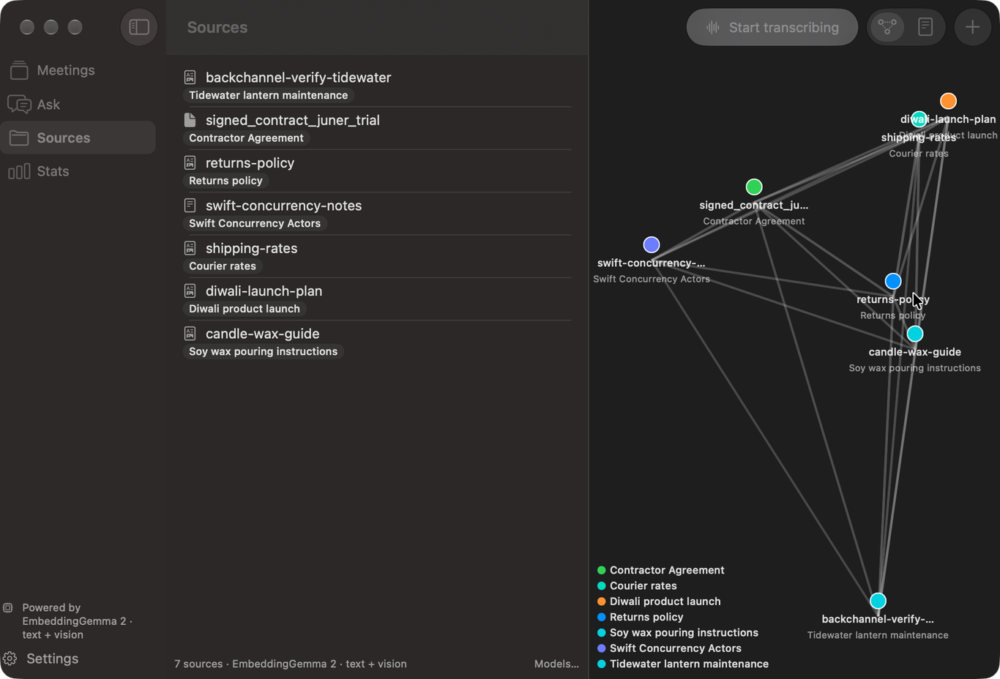

Backchannel
A personal, offline meeting companion for Apple-silicon Macs.
Backchannel transcribes meetings from your microphone and from system audio without joining the call, names who spoke, writes a summary when the meeting stops, and answers questions from the documents you imported and from earlier meetings. Everything runs on your Mac. No account, no server, nothing leaves the machine unless you point the chat at your own API endpoint.
Download
Each release ships Backchannel.zip (always the newest build) and a copy named with its version and build number. Unzip and drag Backchannel.app into Applications.
xattr -dr com.apple.quarantine /Applications/Backchannel.app. A Developer ID signature with notarization
would remove this step and is not in place yet.
Requirements
| Mac | Apple silicon (M1 or later). Intel Macs are not supported. |
|---|---|
| macOS | macOS 27.0 or later. |
| Apple Intelligence | Enabled in System Settings for question spotting, source labels, and, by default, summaries and chat. Transcription works without it. Chat and summaries can instead use a Hugging Face MLX model or any OpenAI-compatible endpoint, chosen in Settings › Chat. |
| On-device models | Downloaded by the app on first run, into Application Support. Embeddings: Google EmbeddingGemma 2, about 320 MB for text or 514 MB for text + vision. Speaker recognition: FluidAudio voice models. Optional chat model: Gemma 4 E2B, about 3 GB. |
| Permissions | Microphone, Speech Recognition, and Screen & System Audio Recording (for the other side of the call). Asked for on first run; a Setup page shows what is still missing. |
| Disk and memory | Models above plus one SQLite database for everything you record and import. Larger chat models need correspondingly more memory. |
What it does
- Live meetings. One on-device speech pipeline for your mic and one for a system-audio tap. Nothing joins the call, nothing is uploaded. A small floating capsule shows the timer and a Stop button; every 30 minutes it asks whether to keep going.
- Speaker names. After a meeting stops, system audio is split by voice on device and voices are matched against earlier meetings. Rename a voice once and it applies everywhere.
- Summaries. Overview, topics, key points and action items with owners, written when the meeting stops.
- Sources. Drop in Markdown, text, PDF and image files, or watch folders. Text is extracted (OCR for scans and images), chunked, embedded and labelled on device. A graph view places sources by similarity.
- Ask. Chat over your sources and meeting transcripts, scoped to everything or to one meeting. Retrieval is hybrid (BM25 plus embedding similarity) and answers cite what they used.
- Live Q&A. Questions heard during a meeting are matched against your sources and answered in the side pane.


Your data
Everything lives in ~/Library/Application Support/Backchannel/: one SQLite file for sources, chunks,
meetings, transcripts, speakers and insights, and a models/ folder beside it. Delete the folder to start over.
An API key for your own chat endpoint, if you set one, is stored only in the login Keychain and sent only to that URL.
Build it yourself
Backchannel is a Swift package. With Xcode 27.1 or later on macOS 27:
git clone https://github.com/lazzyms/backchanel.git
cd backchanel
Scripts/install.shThat builds a release app signed with your own Apple Development certificate and installs it into Applications. Details are in the repository README.